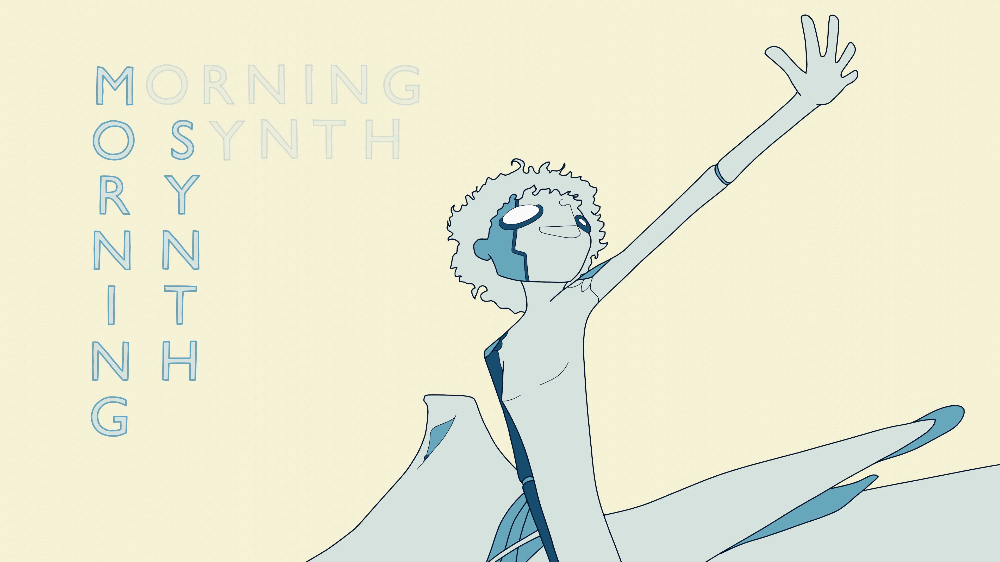

Info
Prodotti
Progetti
PRODOTTI
MORNING SYNTH è una collaborazione in cui l'animazione ispira Tommaso Zoppello nella colonna sonora.
L'album topo RATTO di momo è accompagnato con un loop animato per ogni traccia.
Sigla (Somma delle Parti) è un video dedicato interamente a una singola traccia dei GALASSIA CLUB.



Info
Prodotti
Progetti